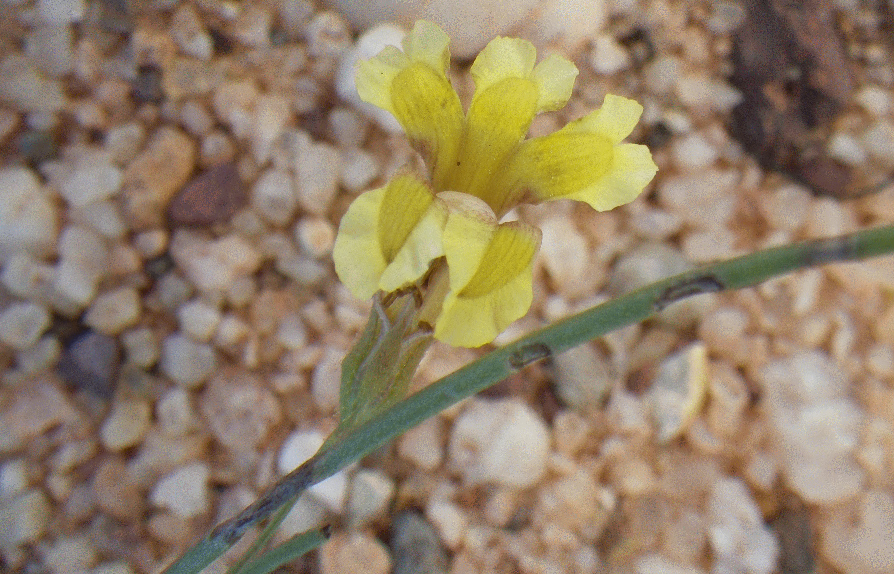

Full text is available as a scanned copy of the original print version.
Get a printable copy (PDF file) of the
complete article, or click on a page image below to browse page by page.
Links are also available for
Selected References.
Images in this article
Fig. 1 Illustration of Goodenia effusa: A, habit; B, mature flower (partly dissected), showing pedicel, calyx, corolla and indusium; C, adaxial corolla lobe with auricle; D,E, indusium (lateral view); F, fruit, in situ, showing pedicel and capsule extending beyond calyx ; G, seed. a from McDonald 6184 (BRI); b,c,d,e from McDonald 5582 (BRI); f,g from McDonald 2247 (BRI). Illustration: Will Smith.

Fig. 2 Goodenia effusa early flower with corolla lobe auricles overlapping and hiding the indusium. The corolla lobe wings have obtuse apices in this specimen (photograph: Keith McDonald – McDonald 115500).
Fig. 3 Distribution of Goodenia effusa in northern Queensland, Australia, with highways (grey lines); insert map (upper right) detail showing distribution between Cairns and Croydon.